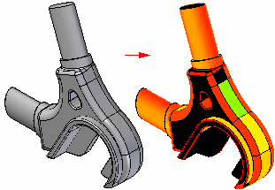

Curvature Shading Settings command
Displays the Curvature Shading Settings dialog box so you can define the curvature shading properties you want to display on a model. Use the command to graphically visualize the radius of curvature of a model.

You must also shade the active window using the Shaded or Shaded With Visible Edges commands to display draft face analysis colors.
How do I
Display zebra stripes on a partDisplay curvature shading on a model
Visualize a surface
Learn more
Evaluating surfacesEvaluating and repairing foreign data
Look up more details
Show Zebra Stripes commandZebra Stripes Settings command
Show Curvature Shading command
Curvature Shading Settings Dialog Box
Show Draft Face Analysis command
Draft Face Analysis command bar
Draft Face Analysis dialog box
Draft Face Analysis Settings command
Surface Visualization command
Surface Visualization Settings dialog box